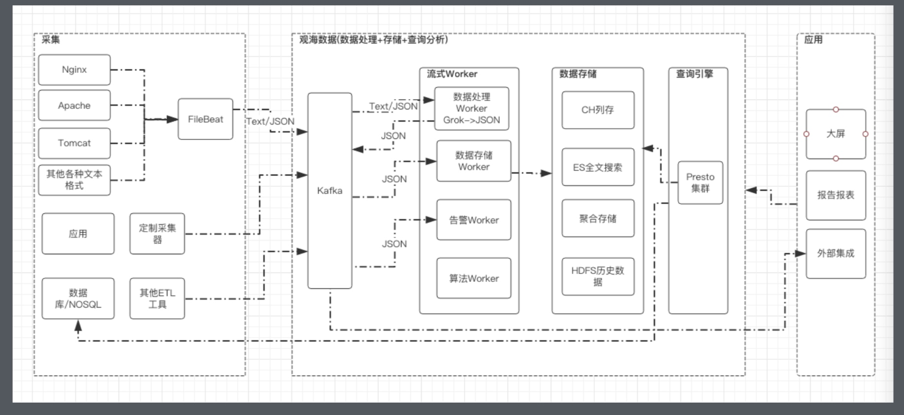
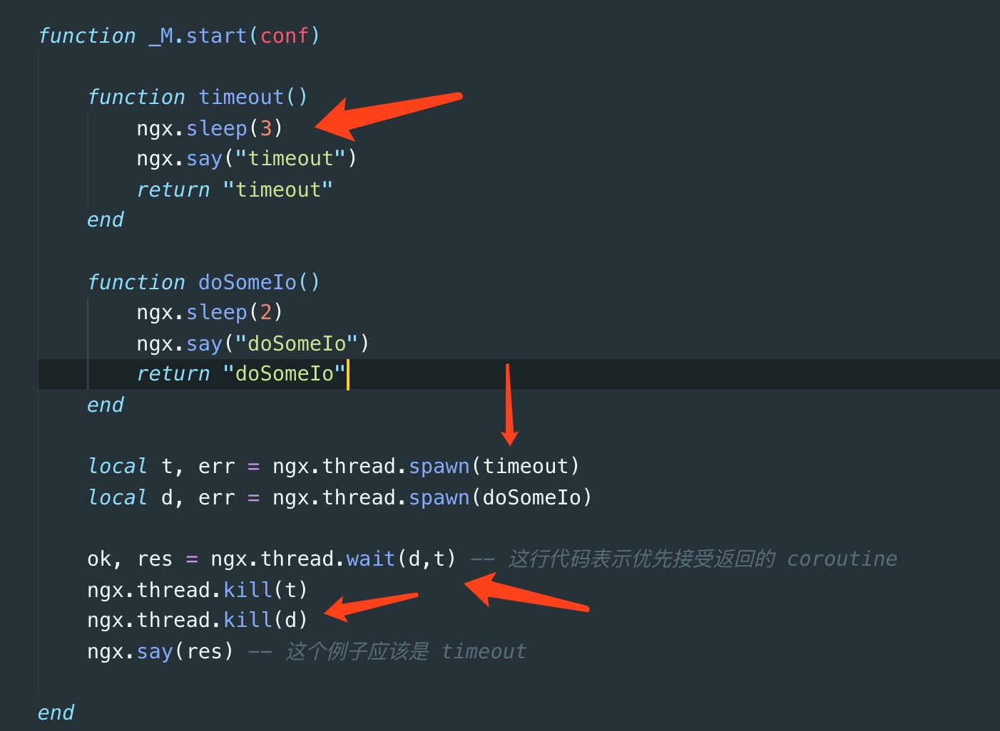

对lua携程做超时时间
原理就是设置一个 定时携程,收到任意携程后,关闭整个所有携程,读取任务结果

nsq简介
基本架构
整体架构图如下

nsqd
负责接收消息,存储队列,将消息发送给客户端
这个服务提供了 创建topic功能,并能生成一组 channel交互数据
具体过程如下
一条消息发送至topic,将会发送到该topic下所有的channel, 发送给某个消费者进行消费

topic
也就是对消息的分区,不同的频道
channel
消息队列
nsqlookup
一组类似zookeeper的功能
负责服务发现,nsqd当当心跳,状态监测,给客户端,nsqadmin提供nsqd的地址和状态
nsqadmin
一个webui用于查看nsq消息队列的基本信息
部署并启动
这里我们使用docker-compose 部署一个nsq集群, 架构如下
单个 nsqd 可以有多个 Topic，每个 Topic 又可以有多个 Channel。Channel 能够接收 Topic 所有消息的副本，从而实现了消息多播分发；而 Channel 上的每个消息被分发给它的订阅者，从而实现负载均衡，所有这些就组成了一个可以表示各种简单和复杂拓扑结构的强大框架。
mac 安装nsq
使用docker-compose
创建docker-compose.yml文件,并写入以下内容
version: '3'
services:
nsqlookupd:
image: nsqio/nsq
networks:
- nsq-network
hostname: nsqlookupd
ports:
- "4161:4161"
- "4160:4160"
command: /nsqlookupd
nsqd:
image: nsqio/nsq
depends_on:
- nsqlookupd
hostname: nsqd
volumes:
- ./data:/data
networks:
- nsq-network
ports:
- "4151:4151"
- "4150:4150"
command: /nsqd --broadcast-address=nsqd --lookupd-tcp-address=nsqlookupd:4160 --data-path=/data
nsqadmin:
image: nsqio/nsq
depends_on:
- nsqlookupd
hostname: nsqadmin
ports:
- "4171:4171"
networks:
- nsq-network
command: /nsqadmin --lookupd-http-address=nsqlookupd:4161
networks:
nsq-network:
driver: bridge
下载php-nsq扩展并编译安装
git clone https://github.com/yunnian/php-nsq.git
cd ./php-nsq
sudo phpize
./configure
make && make install
make test
cd /usr/local/etc/php/.../
// 在php.ini 中添加 extension="nsq.so"
mac上kafak的安装
使用docker-compose快速启用kafka
创建
docker-compose.yml文件并写入以下内容
version: '3'
services:
zookeeper:
image: wurstmeister/zookeeper
ports:
- "2181:2181"
kafka:
image: wurstmeister/kafka
depends_on: [ zookeeper ]
ports:
- "9092:9092"
environment:
KAFKA_ADVERTISED_HOST_NAME: 192.168.1.40
KAFKA_CREATE_TOPICS: "test:1:1"
KAFKA_ZOOKEEPER_CONNECT: zookeeper:2181
volumes:
- ./docker.sock:/var/run/docker.sock
安装php-rdkafka扩展
brew install librdkafka
sudo pecl install rdkafka
php -m | grep kafka // 如果有内容,说明安装成功
快速使用小demo
生产者
消费者
常见的项目管理工具推荐
按排名推荐,前三位支持私有化部署,所以优先级比较高
kooteam
介绍
kooteam 一款国产开源的项目管理工具,排名非常高,功能非常强大 环境为 java + mysql
是否收费
开源,免费
演示地址
大致界面


禅道
描述
禅道 是非常老牌的项目管理工具了,功能强大,开源免费,环境的话是 php+ mysql
是否收费
开源,免费,可私有部署, 专业版收费
项目演示地址
大致界面

Phabricator
描述
官网 是facebook开源的一款项目管理工具,功能非常强大,
支持 code review,制定任务管理,bug追踪,文档管理,工作面板等功能
无中文界面
环境为 php+mysql
是否收费
开源,免费,可私有部署
项目演示地址
大致界面


Trello
描述
Trello 是一个团队协作的面板软件,简洁,功能丰富
是否收费
免费,Power-Ups收费
项目演示地址
注册地址 注册即可体验
大致界面


Worktile
描述
Worktile 是一个国产的项目,类似于 trello, 不推荐
是否收费
< 10 人免费, >= 10人 399年
演示地址
注册 注册即可
jira
描述
JIRA 是一个缺陷跟踪管理系统, 环境 java, 感觉界面太老了,操作也不便捷,不推荐
是否收费
收费, 但有破解版
界面


判断能力
建设自己的评估系统
从表象世界找到本质和规律
不应该信任别人,应该信任自己对别人的评估
修正自己的评估模型,不应当完全出于单纯的情感
增长能力
增强模型与演化路径
做出正确的决定
主动做选择,京东,美团的 5年变化
关系能力
建立,运营自己的共同体
问题的本质是差距(??? 不懂)
理想阶段 => 冲突阶段(冷漠,超越,分离) => 整合阶段 => 协同阶段
人和人的疏远,是从一个人对另一个人隐瞒开始的
基础设施
工程师红利
别的民族不会是你的共同体
三浪叠加的时代
用户为王
顾名思义
万物为媒
平起平坐
抱大腿, 借别人的流量
Go mod 使用教程
介绍&优势
mod 命令是在 go 1.11版本新增的命令,目的是取代GOPATH,提供go官方的包管理解决方案,使用户可以在非$GOPATH/src 目录下随意的构建项目
- 使用mod命令后,将会在 项目目录下生成 一个 go.mod 文件,记录了go项目中引用的模块
- mod 功能启用时,使用的模块将存储在
$GOPATH/pkg/mod中,方便其他项目复用 - 当然也可以选择使用
go mod vendor命令,项目依赖的模块,保存到项目目录下的 vendor目录中
参数
| 命令 | 说明 |
|---|---|
| download | 下载依赖的模块到本地缓存中 |
| edit | 编辑go.mod |
| graph | 打印模块依赖图 |
| init | 在当前目录初始化 go.mod文件 |
| tidy | 下载缺少的模块, 移除不用的模块 |
| vendor | 将依赖从本地缓存复制一份到 ./vendor 目录中 |
| verify | 校验依赖是否正确 |
| why | 解释某个模块为什么被依赖 |
开始使用
初始化
使用
go mod init {项目名称}来对项目进行初始化

修改依赖为指定版本
因为 go.uuid 作者在某个版本修改了api导致原有代码无法使用
这里使用 go mod edit -replace命令,替换指定的版本
修改完成后 go.mod 文件详情
也可以用来替换一些 国内被墙掉的一些模块 如golang.org/*/*

内部模块需要变更为相对路径